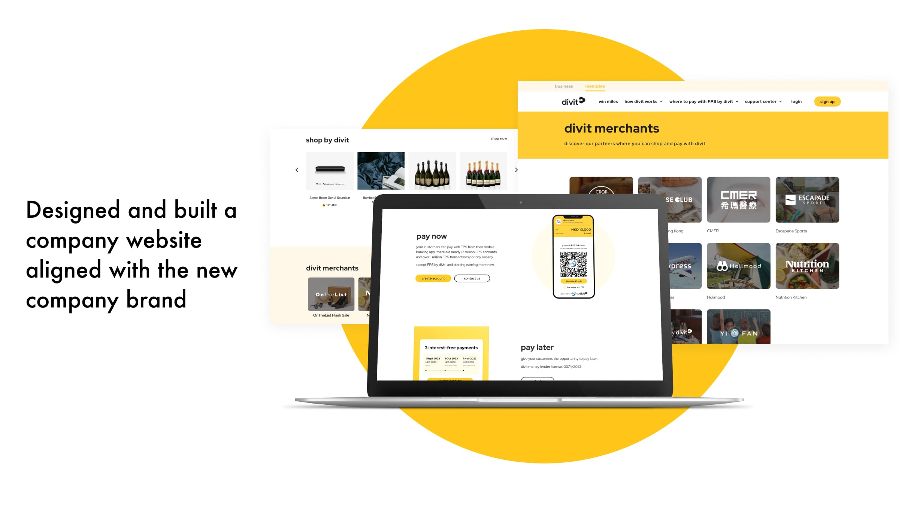

A website that grew with the brand.
Rapid growth left divit's corporate website behind — obsolete messaging, missing products, outdated brand. I led the end-to-end revamp, from stakeholder workshops to WordPress implementation.
Explore the screen-flow libraryThe problem
The company was launching features faster than its website could tell the story. Branding and messaging no longer reflected the business, and newly released products were invisible to prospective merchants.
A corporate site isn't a brochure — it's the first product a B2B merchant ever touches.
The process
Discovery
- Kickoff workshops with product owners and stakeholders
- Google Analytics review and Hotjar session recordings to find real pain points
- Proto-personas built from cross-team input and customer-service feedback
- Focused the target audience on B2B merchants
Design
- User flows for the core conversion journey
- Revised information architecture prioritising key information
- Three wireframe iterations — Option A chosen for scalability
- Content strategy shaped together with UX writing
Testing
- Usability tests with participants aged 23–48 — 95% satisfaction, all tasks under 7 minutes
- Clarified "converted miles" vs "divit miles" with a redesigned explanatory subpage
Implementation
- Built the site from scratch in WordPress with full mobile responsiveness
- Verified interactive behaviour and monitored KPIs after launch
The solution
- Dual-track IA — distinct business and member sections that adapt as products launch
- Scalable navigation — room for new products and marketing campaigns
- Slider-based miles conversion with a clear dual-column view of converted vs unconverted miles
- Stronger CTAs — descriptive headings and integrated login/signup touchpoints
- Educational subpage demystifying the miles concept
Making the business visible at every breakpoint.
The website became a responsive product surface: one story for merchants, members and a growing set of payment products.

The outcomes
SEO score
Merchant signups
Shop-by-divit traffic
Usability-test satisfaction